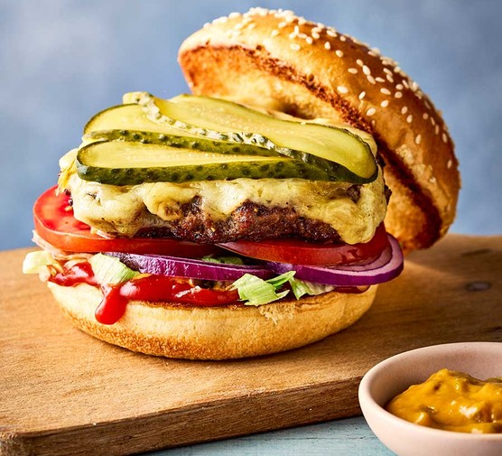

Home
How to Make Smash Burgers

A homemade Smash Burger is quick and easy to make. These fly off the grill in minutes so it’s a great way to feed a crowd.
Smash burgers have the iconic flavor profile of classic Burgers, but that double burger patty with cheese melted in between is irresistible and you’ll love the special sauce.
Ingredients for Smash Burgers
- Ground Beef: We use 1.5 lbs of 80/20 beef to make 4 double-patty burgers, but you can easily scale the recipe up to feed a crowd (use 3 lbs for 8 double-patty burgers).
- Sauce: A simple combination of mayo and yellow mustard is what we use to grill and assemble the burgers.
- Cheese: we love thick-sliced medium cheddar cheese for burgers, but you can use American-style cheese or your favorite sliced cheese.
Burger Toppings
- Buns: brioche buns taste great and have that steakhouse burger look, but any burger bun will work
- Lettuce: thinly slice your iceberg lettuce for a restaurant-style smash burger
- Pickles: sliced dill pickle chips are the best
- Tomatoes: Select meaty and large-sized tomatoes for burgers and cut them into rings
- Red onion: thinly sliced into rings
How to Make Smash Burgers
- Prepare Patties: Divide 1 1/2 lbs of ground beef into 8 equal portions (3 oz each), cover, and refrigerate until ready to cook.
- Make Sauce: Stir together 1/3 cup mayo and 1 tsp mustard and set aside.
- Prep Toppings: fully prep your toppings ahead to assemble the burgers right away while the patties are hot and juicy off the grill.
- Toast buns: lightly butter the cut side of your buns and toast on a griddle or skillet over medium heat until golden brown. Transfer to a rack.
- Cook patties: increase to medium-high heat. Depending on your surface area, place 2 to 4 cold pieces of meat onto the hot surface. Working quickly, cover each piece with a sheet of parchment paper and smash each into a thin patty. Remove parchment paper, season with salt, pepper, and garlic powder, add a dab of sauce, and flip. Sear for 2 minutes on the first side and about a minute on the second side.
- Add Cheese: place a slice of cheese onto half of the patties and top with a second patty and remove from heat. Serve warm over toasted buns with toppings.